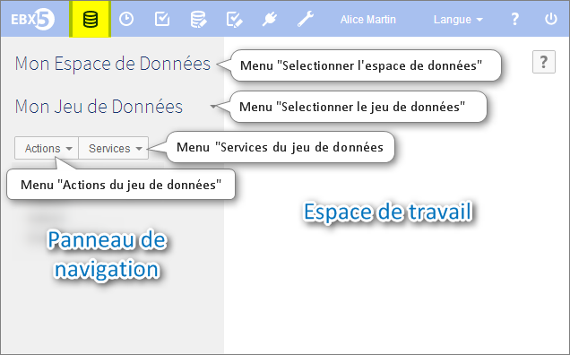

Introduction aux jeux de données
Une fois que vos données de référence ont été modélisées, et ces modèles publiés, vous pouvez gérer vos données de référence au travers des actions suivantes :
créer un nouveau jeu de données dans un data space (voir création),
sélectionner un espace de données où travailler, un jeux de données dans celui-ci, puis consulter l'arborescence des groupes, tables et champs (voir actions),
lire, créer, modifier ou supprimer des enregistrements dans une table d'un jeu de données (voir tables),
définir des vues personnalisées et/ou des hiérarchies sur les tables (voir modes de vue avancés),
commencer à travailler à partir d'un jeu de données existant en en copiant les données (voir héritage),
définir qui peut, ou ne peut pas, accéder à certaines données (voir permissions).
Un jeu de données correspond aux données présentées sous forme de tables ou hiérarchies, et pouvant être filtrées en vue multi-critères. L'accès au contenu d'un jeu de données peut être restreint à l'aide de règles de permissions.
Pour une meilleure compréhension de ces concepts, prenez la liberté de regarder notre glossaire.
Contenu de la section
Vue d'ensemble d'un jeu de données
Modalités d'accès dans l'interface
Pour interagir avec vos données, sélectionnez Données dans la barre de menu. Puis ouvrez un espace de données dans la partie haute du panneau de navigation.

Les utilisateurs peuvent sélectionner un jeu de données en utilisant le panneau de navigation. Deux boutons s'affichent, le premier permet de sélectionner un espace de données, tandis que le second permet de sélectionner un jeu de données. Une fois le jeu de données sélectionné, sa structure apparaît dans le panneau de navigation, et peut être utilisée pour sélectionner un groupe ou une table. Les valeurs de ses éléments (tables, champs, enregistrements) s'affichent alors dans l'espace de travail.
Concepts et outils associés
Une fois dans la section Données, vous allez aborder les outils et les notions suivantes :
Espace de données | Conteneur de données, dont le contenu peut être mis à jour en toute isolation des autres éléments à proximité. |
Jeu de données | Groupe de données prédéfini dans le modèle de données, et ayant une utilité ou un but commun |
Arborescence | Moyen de visualiser le contenu d'un jeu de données dans le panneau de navigation |
Table cible | Table étudiée, dont on souhaite visualiser les dépendances aux autres tables. C'est le dernier et le plus spécifique des niveaux de la hiérarchie, à l'image des feuilles d'un arbre. |
Enregistrement | Groupe de champs formant une unité d'information entrée par un utilisateur dans un certain jeu de données, apparaissant comme le contenu d'un rang dans une table |
Hiérarchie | Arborescence représentant l'enchaînement des dépendances entre les tables. Elle peuvent être équilibrée, déséquilibrée, irrégulière ou en réseau. |
Relation récursive | Occurrence d'un lien de dépendance entre deux entités du même niveau de dimension |
Dimension | Axe possible d'analyse d'une table cible, incluant différents niveaux de dimension (exemple : produits, familles, catégories, etc.) |
Voir aussi :
 Sommaire du guide utilisateur
Sommaire du guide utilisateur